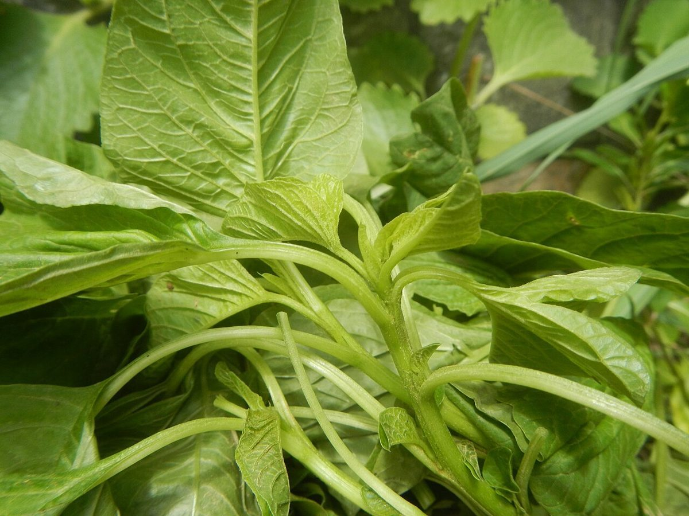

店のこと
店のこと
お店について確認できているのは、所在地・電話番号・Instagramのアカウントです。
Am
このページの「想像してみる」部分は、制作側が想像して書いたものです。お店の実際の様子・考え・メニューとは関係がありません。
確認できていること
- 店名は「PUNA cafe」、業種はカフェ
- 所在地は新潟県十日町市駅通り４−１(〒948-0088)
- 電話番号は025-755-5072
- Instagramのアカウントは @punacafe.tokamachi
- 営業時間・定休日・メニュー・価格・ご予約・駐車場は準備中

想像してみる
弦をひとつ、押さえてみる
ウクレレのコード図は、押さえる位置に丸い印を置いて表します。ここでは、その丸を「いつか知りたいこと」の印に見立ててみました。たとえば営業時間、メニュー、予約の方法。どれもまだ確認できていないので、いまは弦を押さえていない状態、つまり「準備中」です。確認でき次第、ひとつずつ印を増やしていきます(実際のお店の姿ではありません)。